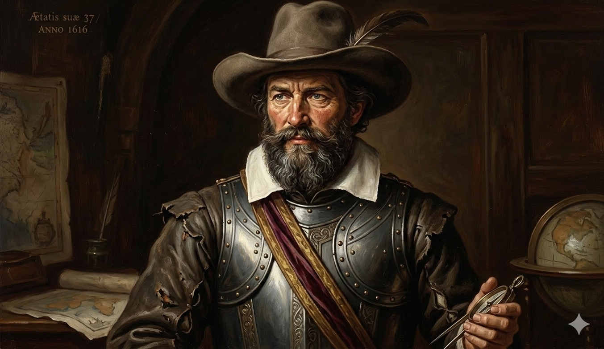
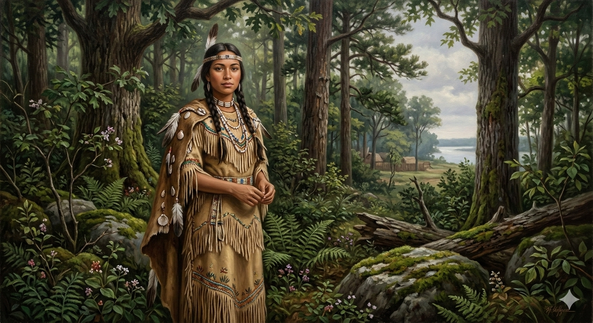
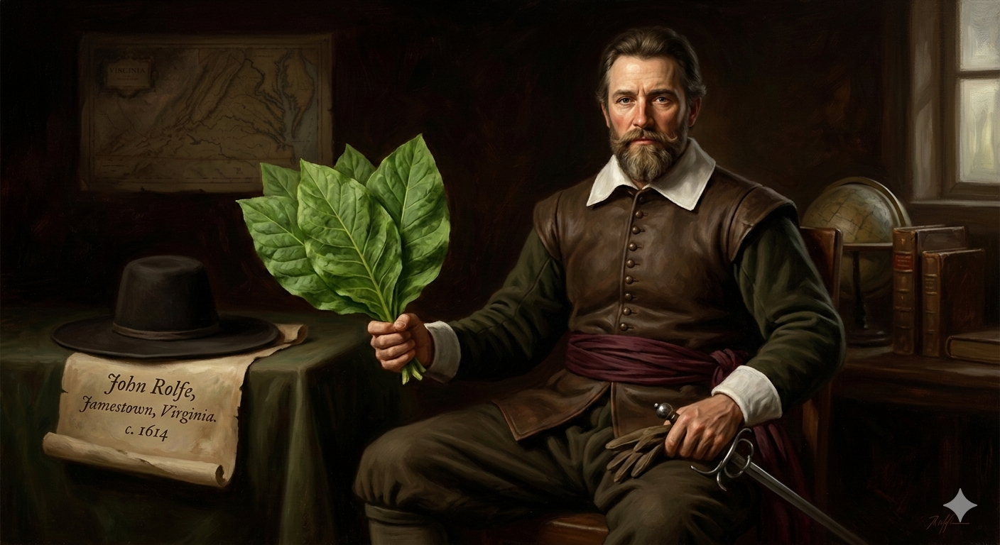
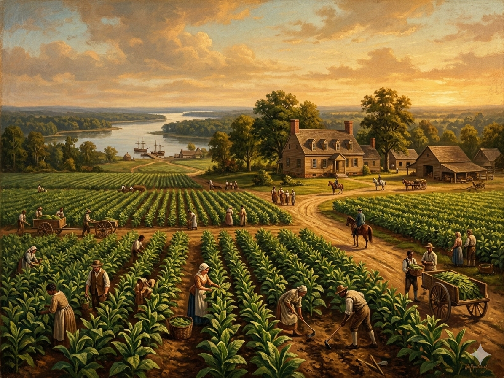

1. שנות פעילות, הקמה ויעדים
שנת הקמה: מאי 1607 (הקמת מצודת ג'יימסטאון).
ישות מקימה: "חברת וירג'יניה של לונדון" (Virginia Company of London). זו הייתה חברת מניות משותפת מוקדמת, שהוקמה על ידי משקיעים בריטיים למטרות רווח, ופעלה תחת זיכיון מלכותי מהמלך ג'יימס הראשון.
היעדים המקוריים:
המטרה הייתה מסחרית טהורה, ללא שום היבט דתי או אוטופי. המשקיעים בלונדון קיוו לשחזר את ההצלחה הספרדית בדרום אמריקה. מטרותיהם היו:
1. למצוא מרבצי זהב וכסף (שלא היו קיימים שם).
2. לגלות מעבר ימי מהיר לאסיה (המעבר הצפון-מערבי).
3. להקים נקודת סחר ולהפיק רווח מהיר מניצול משאבי הטבע המקומיים.
2. דמויות מפתח: סמית', פוקהונטס ורולף

קפטן ג'ון סמית' (1580–1631)
ילדות ורקע: נולד באנגליה למשפחת חקלאים. בצעירותו הפך לחייל שכיר חרב נועז, נלחם בצרפת, ולחם במזרח אירופה נגד האימפריה העות'מאנית, שם אף נשבה ונמכר לעבדות לפני שהצליח לברוח חזרה לאנגליה.
הישגים ומנהיגות: בג'יימסטאון, סמית' מצא קבוצה של "ג'נטלמנים" שמתו ברעב כי סירבו לעבוד אדמה. הוא תפס את ההנהגה והשליט כלל ברזל הישרדותי: "מי שלא יעבוד, לא יאכל". הוא גם ניהל את המשא ומתן המסוכן מול קונפדרציית פווהאטן האינדיאנית כדי להשיג מזון, ובכך הציל את המושבה ממוות ודאי בשנותיה הראשונות. הוא נפצע מפיצוץ אבק שריפה וחזר לאנגליה ב-1609.

פוקהונטס (Pocahontas) (סביבות 1596–1617)
רקע: שמה האמיתי היה מאטואקה (Matoaka). היא הייתה בתו המועדפת של פווהאטן, הצ'יף העליון של אימפריה אינדיאנית ענקית בווירג'יניה. שמה המוכר, פוקהונטס, היה כינוי שפירושו "השובבה".
הישגים (והאגדה): על פי סיפורו של ג'ון סמית', היא הצילה אותו מהוצאה להורג על ידי אביה כשהניחה את ראשה על ראשו (היסטוריונים חלוקים אם האירוע קרה באמת או שהיה טקס אימוץ). היא שימשה כגשר תרבותי, הביאה מזון למתיישבים וקידמה שלום. ב-1613 היא נשבתה בידי האנגלים. במהלך השבי המירה את דתה לנצרות, קיבלה את השם רבקה, ונישאה למתיישב ג'ון רולף.

ג'ון רולף (John Rolfe) (1585–1622)
המושיע הכלכלי של וירג'יניה. ב-1612, רולף הצליח להכליא טבק אינדיאני מקומי עם זרעי טבק מתוק ויקר שהבריח בחשאי מהקריביים הספרדיים. "הזהב החום" הזה הפך את וירג'יניה לאימפריה כלכלית. נישואיו לפוקהונטס ב-1614 יצרו תקופת רגיעה ארוכה שנקראה "השלום של פוקהונטס". הזוג נסע לאנגליה, שם פוקהונטס התקבלה כנסיכה אך חלתה ומתה בגיל צעיר. רולף חזר לווירג'יניה ונהרג (כנראה) במתקפת האינדיאנים של 1622.
3. אידאולוגיה: ניהול תאגידי וראשית הדמוקרטיה
האידאולוגיה הראשונית הייתה קפיטליסטית ותאגידית, אך מתוכה צמחה הדמוקרטיה הייצוגית:
- זכויות אנגליות מלאות: הזיכיון של המלך קבע כי המתיישבים שומרים על כל הזכויות והחירויות שיש לאזרח בתוך אנגליה. סעיף משפטי זה שימש את האמריקאים מאוחר יותר כדי להצדיק את המהפכה האמריקאית.
- בית הבורגסים (House of Burgesses, 1619): כדי למשוך יותר מהגרים, החברה בלונדון אפשרה למתיישבים להקים אסיפה מחוקקת. זה היה המוסד הדמוקרטי הייצוגי הראשון בעולם החדש. בעלי קרקעות יכלו להצביע ולבחור נציגים שיקבעו מיסים ויחוקקו חוקים מקומיים.
4. גיאוגרפיה ובחירת המיקום: אסון ג'יימסטאון
הבחירה בגיאוגרפיה של ג'יימסטאון הייתה מהגרועות בהיסטוריה האנושית, אך נבעה מפחד:
- נהר הג'יימס: המתיישבים הפליגו במעלה הנהר הרחב כדי להיות מוסתרים מעיניהם של ספינות פטרול ספרדיות שעלולות היו להפגיז אותם.
- האי (או חצי-האי) ג'יימסטאון: הם בחרו להתיישב על חלקת אדמה שהייתה מוקפת מים מ-3 כיוונים כדי שיוכלו להגן עליה בקלות מהאינדיאנים.
- האסון ההידרולוגי: האזור היה ביצת מלח רקובה. המים היו מעורבים במי אוקיינוס מלוחים ("ברקיים"), ובקיץ האזור שרץ ביתושים נושאי מחלות (טיפוס, דיזנטריה ומלריה). כמעט כל מתיישב שהגיע בשנים הראשונות חלה ומת בתוך חודשים.
5. כלכלה: הזהב החום והולדת העבדות

כשהבינו שאין זהב, וירג'יניה פנתה לכלכלת מטעים חד-גידולית (Cash crop):
- מהפכת הטבק: הטבק של ג'ון רולף הפך ללהיט בקרב אצולת לונדון. המחירים זינקו, וכל חלקה פנויה בוירג'יניה נשתלה בטבק. הטבק דלדל את האדמה במהירות, מה שאילץ את המתיישבים להתפשט תמיד מערבה וליצור סכסוכים אלימים עם האינדיאנים.
- משרתים חוזיים (Indentured Servants): כדי לעבד את שדות הטבק הענקיים, בעלי המטעים ייבאו עשרות אלפי צעירים עניים מאנגליה שחתמו על חוזה עבודה של 4-7 שנים בתמורה לכרטיס ההפלגה לאמריקה.
- שנת 1619 - ראשית העבדות: בשנה זו הגיעה ספינה הולנדית (או שודדי ים אנגלים ממרקה הולנדית) לחופי ג'יימסטאון ומכרה למתיישבים כ-20 אפריקאים משועבדים. זו הייתה ההתחלה הטרגית של מוסד העבדות האפריקאי באמריקה הצפונית.
6. דמוגרפיה: רעב ושיעורי תמותה קיצוניים
הדמוגרפיה המוקדמת של וירג'יניה הייתה ברוטאלית:
- אוכלוסיית גברים: בתחילה הגיעו רק גברים רווקים. רק ב-1619 החברה החלה לשלוח במכוון ספינות עם נשים צעירות כדי ליצור יציבות חברתית ולהקים משפחות.
- "זמן הרעב" (The Starving Time): בחורף הקשה של 1609-1610, המושבה הייתה תחת מצור אינדיאני וללא מזון. מתוך כ-500 תושבים, שרדו רק 60. ישנן עדויות ארכיאולוגיות קשות למעשי קניבליזם של המתיישבים בנפטרים.
- שיטת החלוקה (Headright System): כדי לעודד הגירה למרות התמותה, הממשל הבטיח 50 אקרים של אדמה לכל מתיישב שישלם על כרטיס ההפלגה שלו, ו-50 אקרים נוספים על כל פועל/משרת שהוא יביא איתו. זה יצר שכבה של אצולת קרקעות עשירה שהחזיקה ברוב השטחים הטובים.
7. מאבקי השליטה: הטבח ומרד בייקון
ההיסטוריה של וירג'יניה רצופה באלימות דחוסה – הן במאבקי הישרדות מול הילידים והן במאבקי מעמדות פנימיים:
טבח הפווהאטן ופשיטת הרגל (1624)
- מועד האירוע: 1622 (הטבח) – 1624 (הפיכה למושבת כתר).
- מהלך האירועים: לאחר מותם של פווהאטן ופוקהונטס, אחיו הלוחמני אופצ'נקנו לקח את ההנהגה. מתוסכל מהתפשטות שדות הטבק, הוא פתח בהתקפת פתע מתואמת במרץ 1622 וטבח בכשליש מאוכלוסיית וירג'יניה בבוקר אחד. המתיישבים הגיבו במלחמת שמד עקובה מדם.
- המעבר לשליטת המלך: למרות שהמתיישבים שרדו, ההוצאות הצבאיות ושיעורי התמותה הובילו את "חברת וירג'יניה" לפשיטת רגל. בשנת 1624, המלך ג'יימס הראשון ביטל את הזיכיון של החברה והפך את וירג'יניה למושבת כתר (Royal Colony).
מרד בייקון (Bacon's Rebellion, 1676)
- מהות המאבק: מאבק פנימי על מעמדות ואדמה. חקלאים עניים ומשרתים חוזיים לשעבר נאלצו לשבת על קרקעות מסוכנות ליד הגבול האינדיאני. הם סבלו מפשיטות וביקשו מהמושל המלכותי (ויליאם ברקלי) סיוע צבאי, אך הוא סירב.
- המרד: צעיר כריזמטי בשם נתנאל בייקון הקים מיליציה פרטית של חקלאים עניים (לבנים ושחורים כאחד). הם טבחו באינדיאנים, צעדו על ג'יימסטאון ובסופו של דבר העלו את ג'יימסטאון באש.
- התוצאה (נקודת המפנה בהיסטוריה האמריקאית): המרד דוכא, אך אליטת בעלי המטעים נבהלה משיתוף הפעולה בין משרתים עניים לבנים ועבדים שחורים. כתוצאה ישירה, האליטה הפסיקה לייבא משרתים לבנים ועברה להסתמך באופן מוחלט על עבדות גזעית מאפריקה לכל החיים, ויצרה חוקי גזע נוקשים.
8. מחקר אטימולוגי: המושבה Virginia
Virgin (בתולה)
מקור: לטינית עתיקההמילה הלטינית Virgo או Virginis (בתולה / עלמה טהורה). הקשר ההיסטורי הוא הקדשה ישירה למלכה אליזבת הראשונה (Queen Elizabeth I), ששלטה באנגליה ונמנעה מנישואין פוליטיים לאורך כל חייה, ולכן כונתה "המלכה הבתולה".
-ia (יה)
מקור: סיומת לטיניתסיומת קלאסית נפוצה בגיאוגרפיה ובקרטוגרפיה המציינת טריטוריה או ממלכה - משמעותה "הארץ של-".
Virginia (וירג'יניה)
החיבור יוצר את המשמעות הברורה: "הארץ של הבתולה" (ארצה של המלכה אליזבת).
השם ניתן בשנת 1584 על ידי חוקר הארצות סר וולטר ראלי. למרות שהמושבה המוצלחת בג'יימסטאון הוקמה רק ב-1607, השם הכולל "וירג'יניה" כבר התקבע במפות האנגליות כשם הכללי לחוף המזרחי של אמריקה הצפונית.